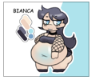

Likes: big silly girls + squishy butts
Dislikes: idk :3
Bianca: She is a goth with tan skin, light blue belly highlights, and long dark hair. As I draw her more I will eventually create a ref sheet, but below is all I got for now.

repo
© 2023 Dogmomai.top. All rights reserved.